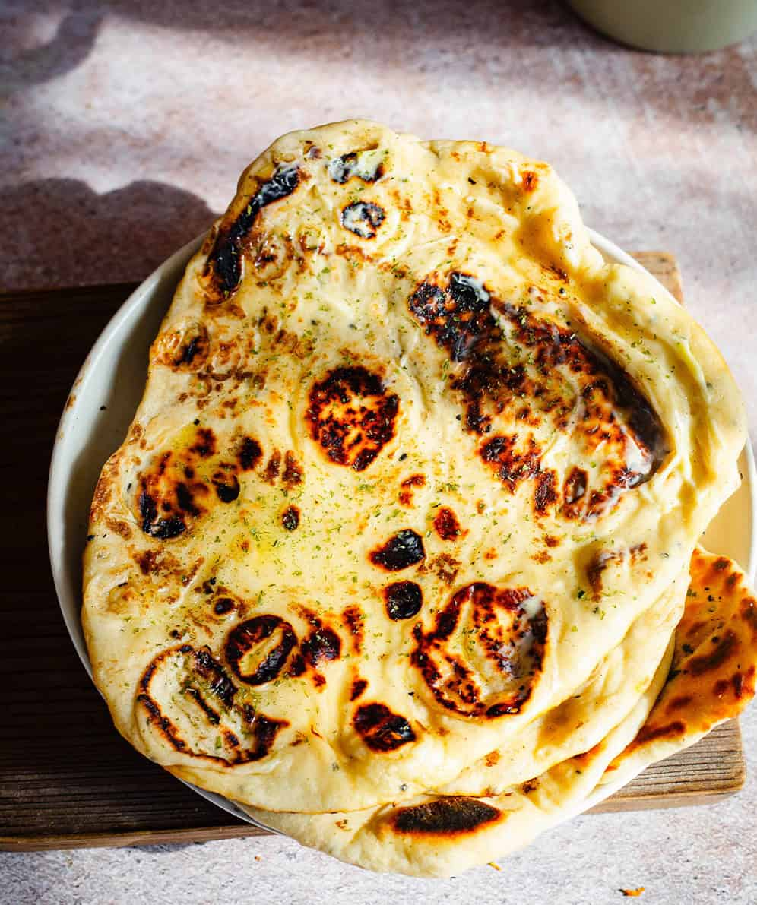

Butter Garlic Naan Bread

Learn how to make pillowy soft and fluffy Garlic Naan with the perfect amount of chew at home! This Indian Naan Recipe is the BEST Naan I have ever had. Better then any take away or restaurant and a recipe I come back to time and time again. Brushed with Garlic Butter, this Naan recipe is delicious all on it’s own!
Ingredients
Naan
- 60 ml Water
- 2 teaspoon Sugar
- 2 ½ teaspoon Instant Yeast
- 185 ml Milk Warm
- 185 g Plain Yoghurt
- 60 ml Oil Olive Oil or Vegetable
- 2 cloves Garlic Crushed
- 485 g Plain Flour
- 1 ¾ teaspoon Salt
Garlic Butter
- 70 g Butter
- 2 teaspoon Garlic Paste
- ¼ teaspoon Salt
- 1 ½ tablespoon Coriander or Parsley chopped
Steps
- Combine Instant Yeast, Water and Sugar in a large bowl and whisk together, then let that sit for a few minutes.
- Add Milk, Yoghurt, Oil, Garlic, Flour and Salt to the bowl and mic together with your hands until they come together.
- Knead until the Dough comes together and forms a smooth-ish ball. I do this for 7 - 10 minutes in a stand mixer or 12 - 15 minutes by hand.
- Transfer the Dough to a greased bowl. Cover the bowl with a damp cloth or greased cling film or plastic wrap and leave to rise for 1 - 1 ½ hours or unto the dough has doubled in size.
- Divide Dough into 10 equal pieces and generously flour your work surface AND the rolling pin. Roll each ball into an oval shape about 6-inches long and ⅛ inch thick.
- Warm a Pan (You can use any pan but I prefer cast iron). Make sure it gets really hot. Test it by adding a few drops of Water. They should sizzle and evaporate quickly.
Place the Naan onto the hot Pan and cook for 2-3 minutes per side. You will notice Bubbles forming all over the Dough.
- Wrap cooked Naan in a dish cloth/kitchen towel and keep them wrapped up.
- Brush the Naan with plenty of melted Garlic Butter (made up of Butter, Garlic, Salt and chopped Parsley or Coriander).
Recipe sourced from here.